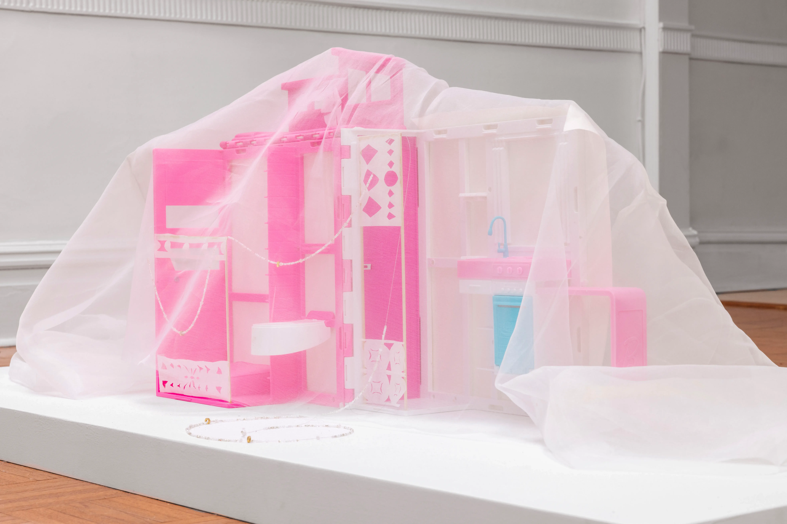

solo show at Romance Gallery, Pittsburgh, US
installation view

Buddha (from Longmen Grottos), 2024, watercolor, pencil, and ink on washi paper, polyester linen, 36.75 x 61 inches

detail view
left: Cloth Calendar 2, 2024, watercolor and ink on washi paper, polyester linen, 61 inches x 19 inches
right: Four Mountains, 2024, watercolor and ink on washi paper, leaves, polyester linen, 59 inches x 18.5 inches

left: Flower Calendar, 2024, watercolor and ink on washi paper, polyester linen, 60 inches x 18.5 inches
right: Cowrie Clock (Rocks Arising), 2024, watercolor and ink on washi paper, polyester linen, 62.5 inches x 18.5 inches
install view, left: Cloth Calendar 1, 2024, pastel and crayon on textiles, tea bags, 15 x 16 inches
Potato 1 with Acorns, 2024, box, fabric, styrofoam potatoes, acorns, 6 x 9 x 3.5 inches
Potato 2 and 3, 2024, utensil organizer, boxes, washi paper, plastic bags, styrofoam potatoes, 17.5 x 12 x 2 inches
Acorn Bed, 2024, box, toy piano, acorns, fabric, stuffing, 7 x 8 x 2.25 inches
Acorn Bed, detail view
install view, front: City God Dollhouse, back: Potato 2 and 3
City God Dollhouse, 2024, dollhouse, paper, wood, beads, fabric, 12 x 22 x 17 inches

City God Dollhouse, 2024, dollhouse, paper, wood, beads, fabric, 12 x 22 x 17 inches